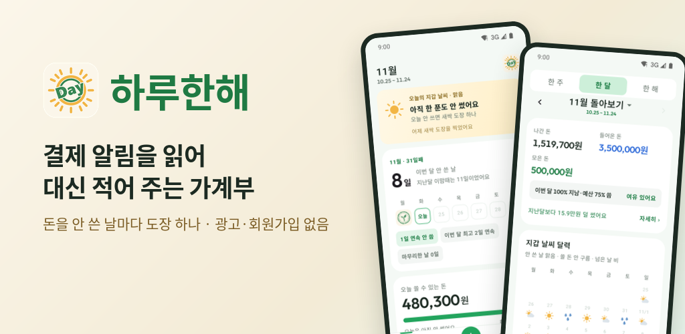

하루한해
결제 알림을 읽어 대신 적어 주는 가계부

- 결제 알림 자동 적기 — 카드·은행·간편결제 알림을 읽어 금액과 가게를 대신 적어요. 알림 내용은 휴대폰 밖으로 나가지 않아요.
- 안 쓴 날 도장 — 돈을 안 쓴 날마다 도장 하나. 한 주·한 달·한 해 돌아보기.
- 지갑 날씨 — 오늘 소비를 맑음·구름·비로.
- 예산·저축 목표, 앱 잠금, 백업·엑셀 내보내기.
- 광고·회원가입 없음. 설치 후 무료로 써 보고, 계속 적으려면 한 번 구매하는 평생 이용권.
개인정보처리방침 · 문의 harilab.app@gmail.com · 만든이: HariLab